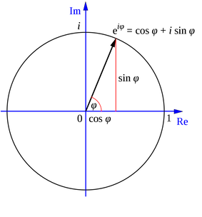

Complex numbers#
What you need to know
Complex numbers are every bit as real as every other number!
Complex numbers are legitimate roots of polynomial equations. E.g quadratic equation can have two complex roots.
Complex numbers are visualized on a 2D plane similiar to how one visualizes vectors.
Symbol \(i=\sqrt{-1}\) is introduced to represent imaginary component of a complex number.
One can use cartesian or polar coordinates to represent complex numbers.
Euler equatiion is one of the most fundamental and beautiful equation in all of math and physics. \(re^{i\phi}=r(cos\phi+isin\phi\))$
Thanks to euler equation complex numbers are easier to manipulate and work with in polar representation.
Multiplying by a complex number can be seen as an operation of rotation in complex planes
\(re^{i\phi}\) means rotating a vector of length r in counter-clockwise direction and \(re^{-i\phi}\) in clickwise respectively.
Conjugate of complex number is obtained by flipping signs in front of imaginary component(s), \(z^{*} = x-iy\)
Multiplying complex number by its conjugate returns the real number corresponding to the squared distance from origin
Recommended: Watch the following YouTube video “complex numbers are real, part-1”
Also recommended: A Visual, Intuitive Guide to Imaginary Numbers
A complex number \(z\) is a kind of 2D number that lives in 2D space and requires two components for its full specification:

Real part \( x \) .
Imaginary part \( y \).
Complex numbers are every bit as real as negative numbers. Sure, you do not count objects on your fingers by using complex numbers but complex numbers obey important relationships in math and physics the same way other numbers do. In fact we will see that the central equation of quantum mechanics, the Schrödinger equation, contains an imaginary number. As a result, solutions of the Schrödinger equation are functions of complex variable. Why? Because, apparently, that’s how nature works. Nature operates on a complex plane, which includes real numbers as subset. Can we learn to use complex numbers with ease and develop an intuition and visual sense? Yup! And that will be our objective in this short Appendix.
Introducing \( i \)#
When first confronted with complex numbers they seem unintuitive and hard to visualize. The imaginary unit \( i \) in particular mystifies as to what it is and where did it come from. Some facts from mathematics are in order here:
What is the definition of \( i \)? The imaginary number \( i \) is defined solely by the property that its square is \(−1\), that is: \(i\cdot i=-1\).
How does \(i\) change what I know about math of real variables? Imaginary numbers are an important mathematical concept, which extend the real number system \(\mathbb{R}\) to the complex number system \(\mathbb{C}\), which in turn provides at least one root for every nonconstant polynomial \(P(x)\). (See the Fundamental theorem of algebra.) The term “imaginary” is used because there is no real number having a negative square.
Where does \(i\) appear in math? Most notably imaginary number (i) provide solutions to quadratic equation \(x^2 + 1 = 0.\) Although there is no real number with this property, i can be used to extend the real numbers to what are called complex numbers, using addition and multiplication. Generally there are two complex square roots of every real number e.g square root of -1 is i and -i.
What do you call a number that contains i? A complex number z=1+2i. A function of complex variable is a function if it operates on complex variables z.
Eculidean vs polar representation of complex numbers#

The Euclidean, polar, and trigonometric forms of a complex number \( z \) are given by:
The second equality above is known as Euler’s formula And equally widely regarded as one of the most beautiful and mysterious in mathematics.
The complex conjugate \(\bar{z}\) of \(z\) is defined as
The value \(r\) is the Euclidean distance of vector \((x,y)\) from the origin and is equal to the modulus of \(|z|=\sqrt{\bar{z}z}\)
The value \(\phi\) is the angle of (0,0)-(x,y) line with respect to the real axis. The tangent of \(\phi\) is \(\left(\frac{y}{x}\right) \). Therefore,
Three elementary trigonometric functions are
De Moivre’s Theorem#
De Moivre’s theorem states that:
We raised complex number to power n, used polar representation and realized that exponent raised to power n simply multiplies polar angle by n. Note that de Moivre’s theorem allows relating trigonometric functions of angle \(\theta\) raised to power \(n\) to trignomoteric functions of of angle \(n\theta\) of power one:
The proof of de Moivre’s theorem can be done via induction, e.g one can expand the parentheses ans assert the equality for cases n=2, n=3, …
Exercise: set n=2 and first set real component to zero and obtain expresion for sine. Then set imaginary component to zero and obtain expression for cosine.
Example-1: Pythagoras’ theorem#
We can use de Moivre’s theorem to show that \( r = \sqrt{x^2 + y^2} \).
We have
and thus
We recognize this as a theorem of Pythagoras.
Example-2: Trigonometric Identities#
We can obtain a complete suite of trigonometric identities by appropriately manipulating polar forms of complex numbers.
We’ll get many of them by deducing implications of the equality
For example, we’ll calculate identities for \(\cos{(\omega + \theta)} \) and \( \sin{(\omega + \theta)}\).
Using the sine and cosine formulas presented at the beginning of this lecture, we have:
We can also obtain the trigonometric identities as follows:
Since both real and imaginary parts of the above formula should be equal, we get:
The equations above are also known as the angle sum identities. We
can verify the equations using the simplify function in the
sympy package.
Example-3: Trigonometric Integrals#
We can also compute the trigonometric integrals using polar forms of complex numbers.
For example, we want to solve the following integral:
Using Euler’s formula, we have:
and thus: